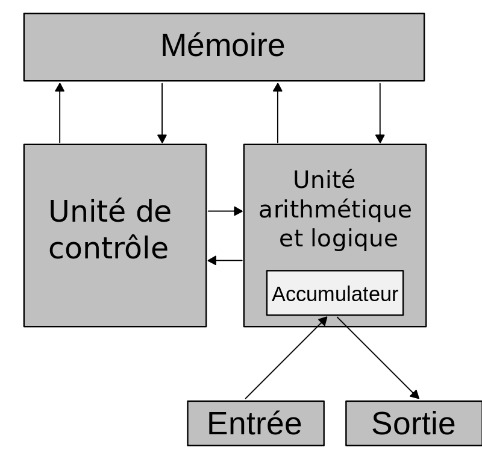

Von Neumann a donné son nom à l'architecture de von Neumann utilisée dans la quasi-totalité des ordinateurs modernes, l'apport d'autres collaborateurs de l'EDVAC (l'un des premiers ordinateurs électriques) en est par conséquent grandement minimisé (on citera J. Presper Eckert, Grace Hopper et John William Mauchly parmi d'autres). Cela est dû au fait qu'il est, en 1945, le rapporteur des travaux pionniers en la matière (First Draft of a Report on the EDVAC). Le modèle de calculateur à programme auquel son nom reste attaché et qu'il attribuait lui-même à Alan Turing, possède une unique mémoire qui sert à conserver les instructions et les données. Ce modèle, extrêmement innovant pour l'époque, est à la base de la conception de la plupart des ordinateurs conçus aujourd'hui.
